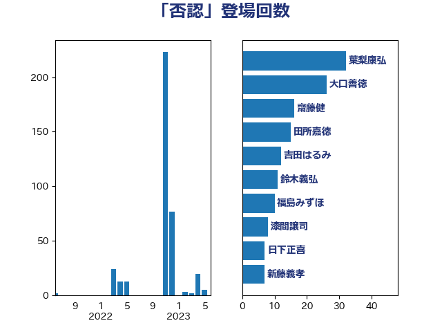

単語「否認」

| 葉梨康弘 | 自由民主党 | 32 回 |
| 大口善徳 | 公明党 | 26 回 |
| 齋藤健 | 自由民主党 | 16 回 |
| 田所嘉徳 | 自由民主党 | 15 回 |
| 吉田はるみ | 立憲民主党 | 12 回 |
| 鈴木義弘 | 国民民主党 | 11 回 |
| 福島みずほ | 社会民主党 | 10 回 |
| 漆間譲司 | 日本維新の会 | 8 回 |
| 日下正喜 | 公明党 | 7 回 |
| 新藤義孝 | 自由民主党 | 7 回 |
| 牧山ひろえ | 立憲民主党 | 6 回 |
| 玉木雄一郎 | 国民民主党 | 5 回 |
| 山田勝彦 | 立憲民主党 | 5 回 |
| 山下貴司 | 自由民主党 | 5 回 |
| 古庄玄知 | 自由民主党 | 5 回 |
| 鈴木庸介 | 立憲民主党 | 4 回 |
| 本村伸子 | 日本共産党 | 4 回 |
| 宮本徹 | 日本共産党 | 4 回 |
| 鎌田さゆり | 立憲民主党 | 3 回 |
| 仁比聡平 | 日本共産党 | 3 回 |
| 長浜博行 | 無所属 | 2 回 |
| 川田龍平 | 立憲民主党 | 2 回 |
| 寺田学 | 立憲民主党 | 2 回 |
| 宮崎政久 | 自由民主党 | 2 回 |
| 古川禎久 | 自由民主党 | 2 回 |
| 倉林明子 | 日本共産党 | 2 回 |
| 佐々木さやか | 公明党 | 2 回 |
| 阿部知子 | 立憲民主党 | 1 回 |
| 阿部弘樹 | 日本維新の会 | 1 回 |
| 足立康史 | 日本維新の会 | 1 回 |
| 赤嶺政賢 | 日本共産党 | 1 回 |
| 玄葉光一郎 | 立憲民主党 | 1 回 |
| 渡辺博道 | 自由民主党 | 1 回 |
| 池下卓 | 日本維新の会 | 1 回 |
| 梅村みずほ | 日本維新の会 | 1 回 |
| 柚木道義 | 立憲民主党 | 1 回 |
| 東国幹 | 自由民主党 | 1 回 |
| 杉久武 | 公明党 | 1 回 |
| 守島正 | 日本維新の会 | 1 回 |
| 大塚耕平 | 国民民主党 | 1 回 |